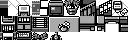
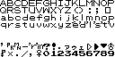

Welcome
This is a remake of Red's house in Pokemon Red! This remake is made entirely in pure Javascript, HTML, and CSS!
Original assets
I decided early on that I would use the assets exported from the game as-is, rather than modifying in advance.
For example, here is the tileset for Red's house (the tileset I used for this remake):
Does not look much like a bedroom or a living room does it? This is because Pokemon red was distributed in a cartidge with very limited space, so they couldn't exactly keep an image for every room as there wasn't space. So instead, the backgrounds of the game are stitched together from tilesets like the above.
The code for this project does the same, it stitches it's backgrounds together based on the original tileset image!
Authenticity
By using the assets, manipulating them in the same way, and some careful coding, I've made this remake as authentic as possible within the confines of a browser.
Instead of simplying handling the textboxes with modern CSS, I instead opted to craft the text in the same way the original game did, stitching characters together from an image.
So this:
Becomes this:

I also had to recreate the various systems and quirks of the game in Javascript!
Fully fledged engine
To begin with, this project used the engine I created for BrowserSnake but this remake now contains the fundamentals for a full RPG. I reworked the engine considerably to add the functionality I needed for this project.
I use a frame queue system, which is a system where functions are passed from objects in the game (such as characters) to the framequeue and then run in the order they were added. A frame is then executed at set intervals, to ensure the game runs smoothly and consistently - and allows objects to internally track their state.